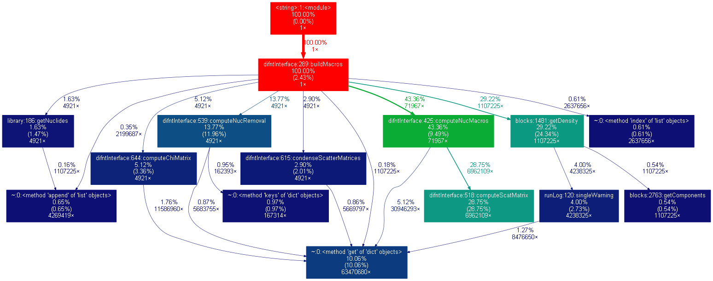

6. Profiling ARMI¶
Python in slow, so it’s important to profile code to keep it running reasonbly quickly. Using the
basic Python profiler is the best way to get started.
Once you have a .stats file, however, we highly recommend using a visualizer.
The profiler visualizer gprof2dot is an invaluable tool for taking a look at the profiler traces. You have to install graphvis also, which contains the dot program.
The basic commands to run are:
python -m gprof2dot -f pstats <mystatsfile>.stats | dot -Tpng -o <mydesiredimagename>.png
This produces images like this:

Figure 1. An example of the profiler output rendered to a png.¶